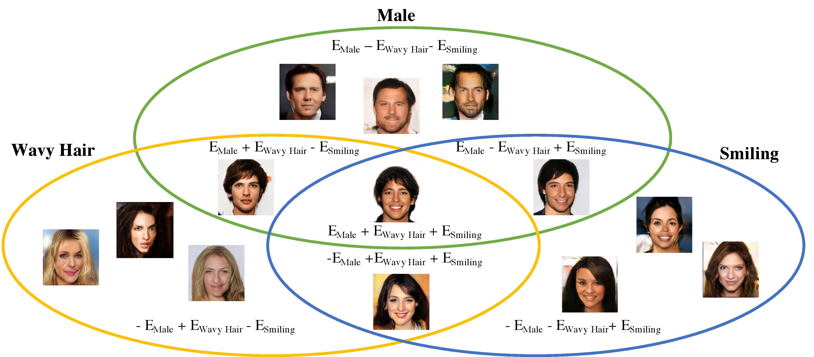

Compositional Visual Generation and Inference with Energy Based Models
Yilun Du1 Shuang Li1 Igor Mordatch2
1 MIT CSAIL 2 Google Brain
Paper | Tensorflow code

Abstract
A vital aspect of human intelligence is the ability to compose increasingly complex concepts out of simpler ideas, enabling both rapid learning and adaptation of knowledge. In this paper we show that energy-based models can exhibit this ability by directly combining probability distributions. Samples from the combined distribution correspond to compositions of concepts. For example, given a distribution for smiling faces, and another for male faces, we can combine them to generate smiling male faces. This allows us to generate natural images that simultaneously satisfy conjunctions, disjunctions, and negations of concepts. We evaluate compositional generation abilities of our model on the CelebA dataset of natural faces and synthetic 3D scene images. We also demonstrate other unique advantages of our model, such as the ability to continually learn and incorporate new concepts, or infer compositions of concept properties underlying an image.

Paper
arxiv, 2019.
Citation
"Compositional Visual Generation and Inference with Energy Based Models", arxiv. Bibtex
Code: Tensorflow
Method
Energy based models (EBMs) represent a distribution over data by defining an energy \(E_\theta(x) \) so that the likelihood of the data is proportional to \( \propto e^{-E_\theta(x)}\). We can generate data from an EBM by implicit sampling through Langevin dynamics, where samples are sequentially refined, following the procedure \[ \tilde{\mathbb{x}}^k = \tilde{\mathbb{x}}^{k-1} - \frac{\lambda}{2} \nabla_\mathbb{x} E_\theta (\tilde{\mathbb{x}}^{k-1}) + \omega^k, \; \omega^k \sim \mathcal{N}(0,\lambda), \] By defining generation through such a manner, we can compose generation across different EBMs learned on attributes of position, size, color, gender, hair style, and age, through the symbolic operators of conjunction, disjunction, and negation. In particular, we consider a set of independently trained EBMs, \(E(\tilde{x}|c_1), E(\tilde{x}|c_2), \ldots, E(\tilde{x}|c_n)\), which are learned conditional distributions on underlying latent codes $c_i$. Latent codes we consider include position, size, color, gender, hair style, and age, which we also refer to as concepts.Conjunction
In concept conjunction, given separate independent concepts (such as a particular gender, hair style, or facial expression), we wish to construct an generation with the specified gender, hair style, and facial expression -- the combination of each concept. The likelihood of such an generation given a set of specific concepts is equal to the product of the likelihood of each individual concept \[ p(x|c_1 \; \text{and} \; c_2, \ldots, \; \text{and} \; c_i) = \prod_i p(x|c_i) \propto e^{-\sum_i E(x|c_i)}. \] Through our implicit sampling procedure, we can generate samples using \[ \tilde{\mathbb{x}}^k = \tilde{\mathbb{x}}^{k-1} - \frac{\lambda}{2} \nabla_\mathbb{x} \sum_i E_\theta (\tilde{\mathbb{x}}^{k-1}|c_i) + \omega^k. \]Disjunction
In concept disjunction, given separate concepts such as the colors red and blue, we wish to construct an output that is either red or blue. We wish to construct a new distribution that has probability mass when any chosen concept is true. A natural choice of such a distribution is the sum of the likelihood of each concept: \[ p(x|c_1 \; \text{or} \; c_2, \ldots \; \text{or} \; c_i) \propto \sum_i p(x|c_i) / Z(c_i). \] where \( Z(c_i) \) denotes partition function for the chosen concept. Through our implicit sampling procedure, by assuming partition functions are equal, we can then generate samples using \[ \tilde{\mathbb{x}}^k = \tilde{\mathbb{x}}^{k-1} - \frac{\lambda}{2} \nabla_\mathbb{x} \text{logsumexp}(-E(x|c_i)) + \omega^k \]Negation
In concept negation, we wish to generate an output that does not contain the concept. Given a color red, we want an output that is of a different color, such as blue. Thus, we want to construct a distribution that places high likelihood to data that is outside a given concept. One choice is a distribution inversely proportional to the concept. Importantly, negation must be defined with respect to another concept to be useful. The opposite of alive may be dead, but not inanimate. Negation without a data distribution is not integrable and leads to a generation of chaotic textures which, while satisfying absence of a concept, is not desirable. Thus in our experiments with negation we combine it with another concept to ground the negation and obtain an integrable distribution: \[ p(x| \text{not}(c_1), c_2) \propto \frac{p(x|c_2)}{p(x|c_1)^\alpha} \propto e^{ \alpha E(x|c_1) - E(x|c_2) } \] Through our implicit sampling procedure, by assuming partition functions are equal, we can then generate samples using \[ \tilde{\mathbb{x}}^k = \tilde{\mathbb{x}}^{k-1} - \frac{\lambda}{2} \nabla_\mathbb{x} (\alpha E(x|c_1) - E(x|c_2)) + \omega^k \] By definely particular combinations of EBMs trained on male, smiling, and black haired faces, we are able to obtain generations shown below: Compositional Generations
We explore the ability of our models to compose across different attributes. We first condition on the attributes of shape, position, size and color attributes. Through the logical operator of conjunction, we can sequentially make more refined cube shapes through four independently trained EBMs. We can similarily condition different attributes of humans faces Surprisingly, we find that by composing additional models together, we are actual able to make higher resolution images.
Surprisingly, we find that by composing additional models together, we are actual able to make higher resolution images.
Higher Level Compositions
An advantage of defining composition through the manipulation of probability distributions, is that we can nest these operators to specify particular generation. We showcase this composing specific identites over multiple different attributes.
Object Level Compositionality
In addition, we can also learn EBMs on the position attributes! Then, by applying conjunction to models, we further generate different compositions at the object level. By conditioning generation on sum of EBMs on two different positions, we can get two cube generations in different locations.Continual Learning in Generation
By composing independent models sequentially, we can further use our learned models to generalize and extrapolate to a newly learned concepts. To test this we consider:- A dataset consisting of position annotations of purple cubes at different positions.
- A dataset consisting of shape annotations of different purple shapes at different positions
- A dataset consisting of color annotations of different color shapes at different position